| 日付 | 2023年3月19日（日） |
|---|---|
| 山域 | 西上州 |
| メンバー | 家族（妻） |
| 山行形態 | 日帰り |
| アクセス | 車 |
| ルート (Map) | 内山峠駐車場 (9:04) - (9:51) 鋏岩修験道場跡 - (10:10) 一杯水 - (10:37) 艫岩展望台 - (11:21) 荒船山 - (11:58) 艫岩展望台 (12:37) - (13:43) 内山峠駐車場 |
花粉の季節が続いているので、今回も子供は家に置いての夫婦登山。
行先は12年振りの荒船山。娘が0歳の時に連れて行った山だ。
内山峠駐車場に到着。標高1073m。
昨日は一日中雨が降っていた。この辺りは雪だったようで、周囲は白く染まっている。
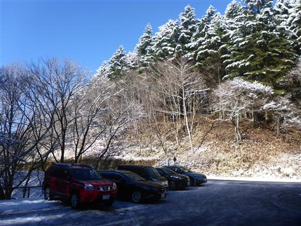
登山口。雪で真っ白だ。
先週の山の記事を見ると全く雪は無かったので、全て昨日降った雪だろう。
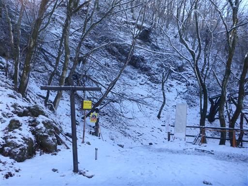
早速登山開始。雪の上を歩くのは久々だ。
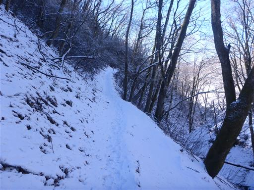
しばらく歩くと霧氷が見えてくる。
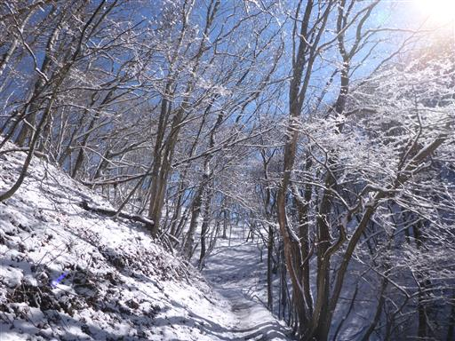
道が細いところは慎重に通過。

美しい雪道。雪の量は多くなく、新雪の上を歩くのは気持ちが良い。

本日は絶好の快晴。霧氷がきれいに輝いている。
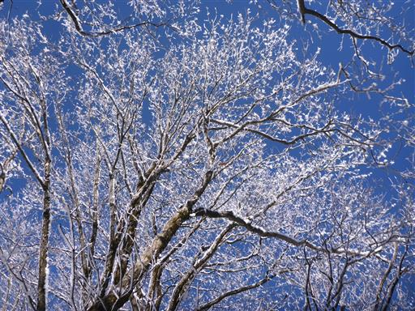
一面真っ白。
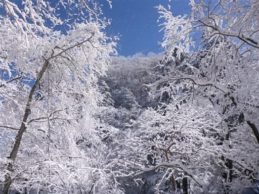
鋏岩修験道場跡に到着。大きな岩壁が見られる。
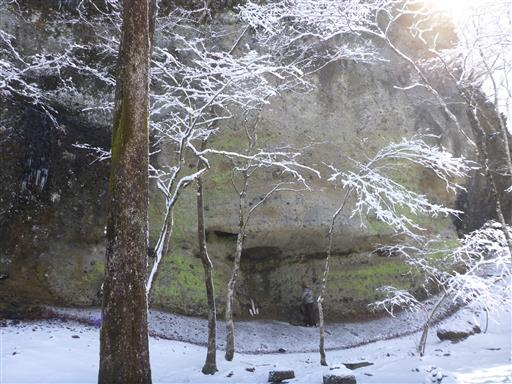
荒船山の山頂部が姿を現す。
この山はテーブルマウンテンで、その中で一箇所盛り上がっているところが山頂だ。
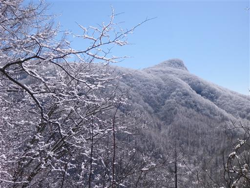
少し道が険しくなってくる。
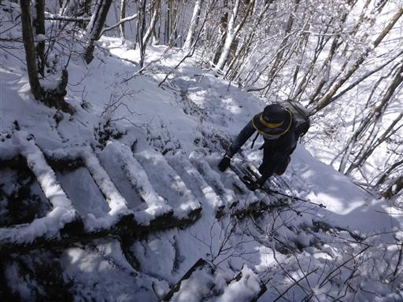
ちょっとした岩場を何ヶ所か通過する。
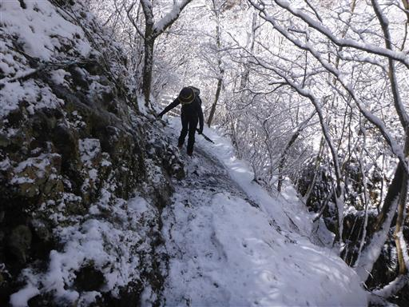
岩は全て氷でコーティングされているのでよく滑る。
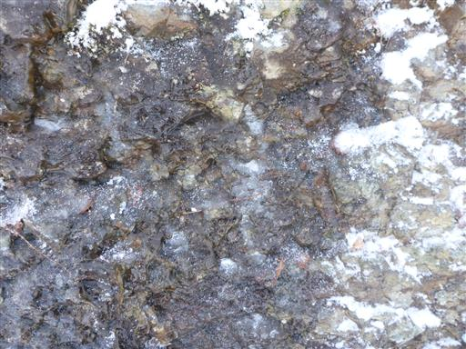
たくさんのツララたち。土からしみ出した水が凍りついたのだろう。

樹林帯の間から八ヶ岳が見える。木の枝が邪魔だが迫力のある景色だ。
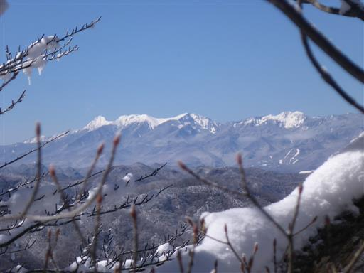
テーブルマウンテンの頂上台地に到着。
素晴らしい景色が広がる。
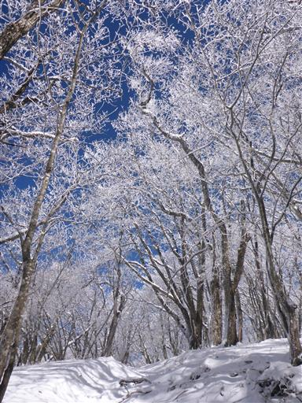
真っ白な霧氷、真っ青な空。どこを見渡しても美しい。
車から荒船山を眺めたときに、もしかしたら霧氷が見られるかもと思っていたが、
ここまで素晴らしい景色に出会えるとは思っていなかった。
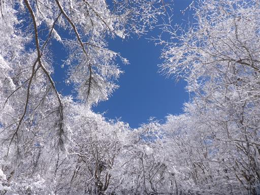
頂上台地は広い。ここまで来たらのんびり歩くのみだ。
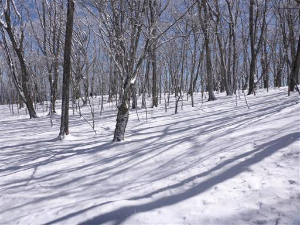
避難小屋に到着。
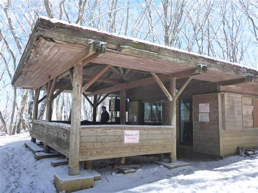
艫岩での転落注意を促す張り紙。
クレヨンしんちゃんの作者はこの岩壁で亡くなった。
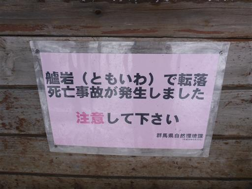
早速、艫岩展望台に向かう。
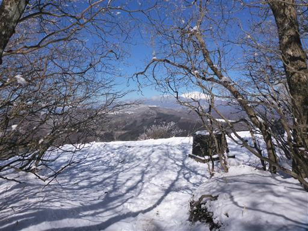
真正面に現れるのは浅間山。
この山に来るのは3度目だが、3度目にして初めて浅間山を望むことができた。
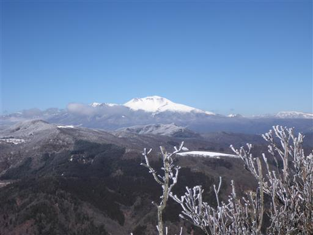
そして、驚いたのが北アルプスがくっきりと見えること。
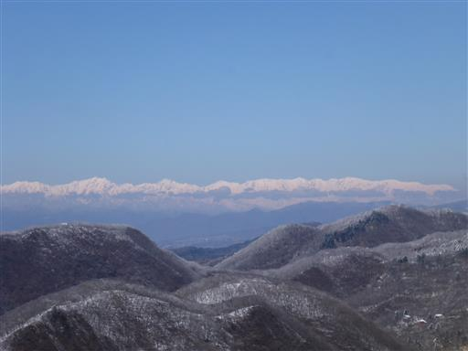
穂高岳～槍ヶ岳。
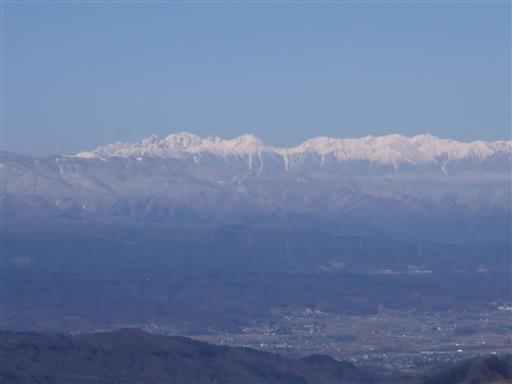
鹿島槍ヶ岳～五竜岳～唐松岳。
壁のように一直線に聳え立つ北アルプスがくっきりと見える。
昨日雨が降ったことで、空気が非常に澄んでいる。
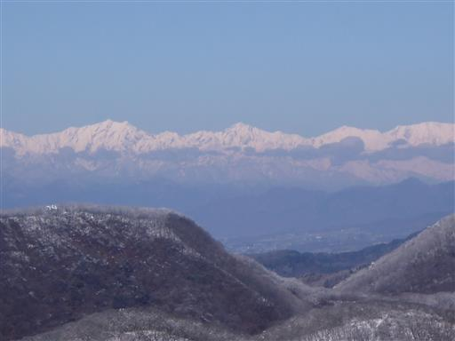
艫岩の断崖を横から眺める。

そして艫岩の断崖を上から見下ろす。
200mの絶壁だが、樹木があるため真下は見えない。
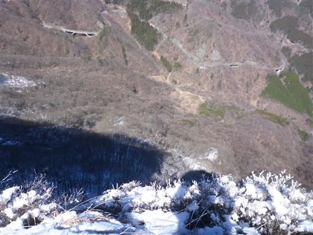
景色を堪能したら荒船山山頂を往復する。
アップダウンのない、こんな景色の道を歩いていく。
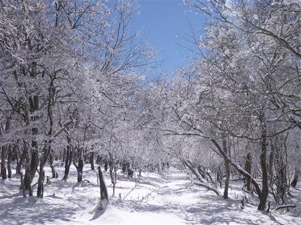
細かい木の枝一本一本が白く染まっている。空は驚くほど青く、雲一つない快晴。
雪が眩しくて目を開けるのがちょっと辛い。サングラスをかけている登山者も多い。
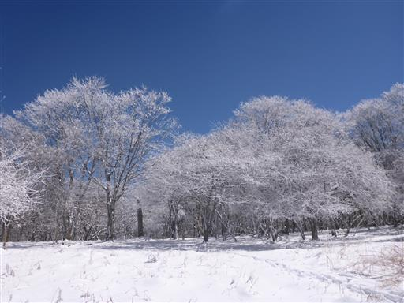
最後に急斜面を登ると、荒船山山頂に到着する。
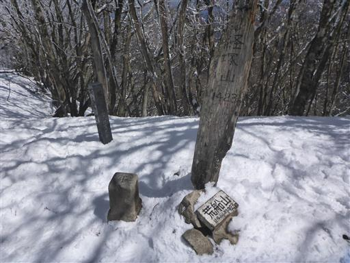
山頂には祠がある。
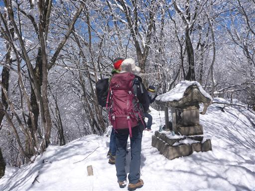
狭い山頂は密度の濃い樹林に覆われていて、冬でも景色は得られない。
相変わらず冴えない山頂だ。
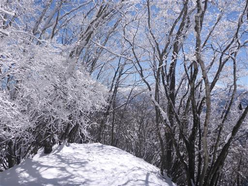
山頂にあるしめ縄も木の枝と同じように凍り付いている。
狭くて景色もないので、ここでは休憩をせずに艫岩展望台に引き返すことにする。
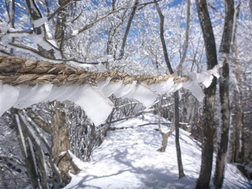
艫岩展望台に戻ってくる。ここで腰を下ろして昼食タイム。
遠く北アルプスが一直線に並んでいる。
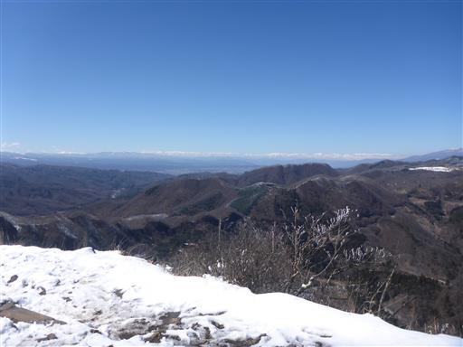
正面には浅間山。白い山々を眺めながら休憩する。
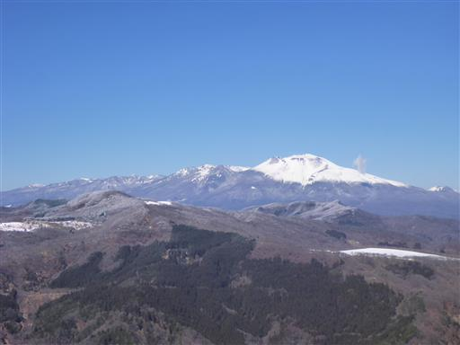
ゆっくり休憩したら下山開始。午後になって霧氷は無くなり始めている。
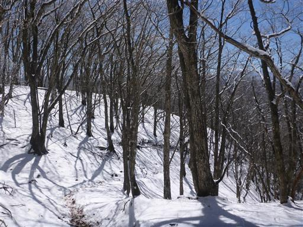
氷でコーティングされていた岩場も、氷が解けて歩きやすくなっている。
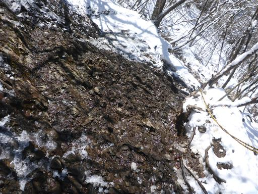
南側斜面だけがきれいに雪が消えている。
太陽の当たり方一つで景色は大きく変わる。
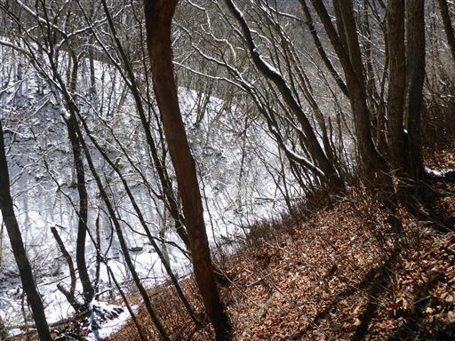
下界に近くなるともうほとんど雪のない世界だ。
一日限りの魔法にかけられたような山だった。
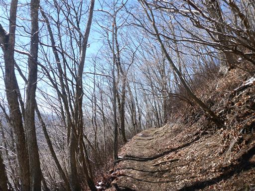
無事下山。もう春の景色になっている。
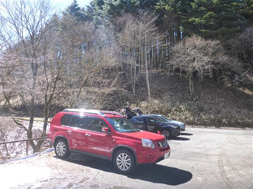
帰り道に、車を停めて艫岩を眺める。
登山中には望めない景色だが、荒船山のシンボルのこの景色を見たかった。
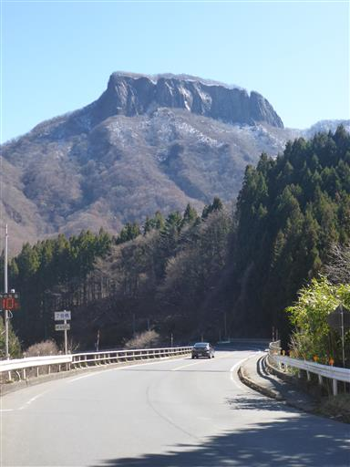
荒船山は名の通り、荒波の中を進む船の形に似ている。
艫とは船尾のこと。個人的には船尾より船首のように見えるのだが…
数時間前にはあの先端に立って景色を眺めていた。
今回の山行は最高の天気に恵まれ、霧氷、展望、何もかもが素晴らしい山だった。
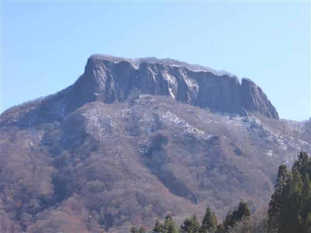